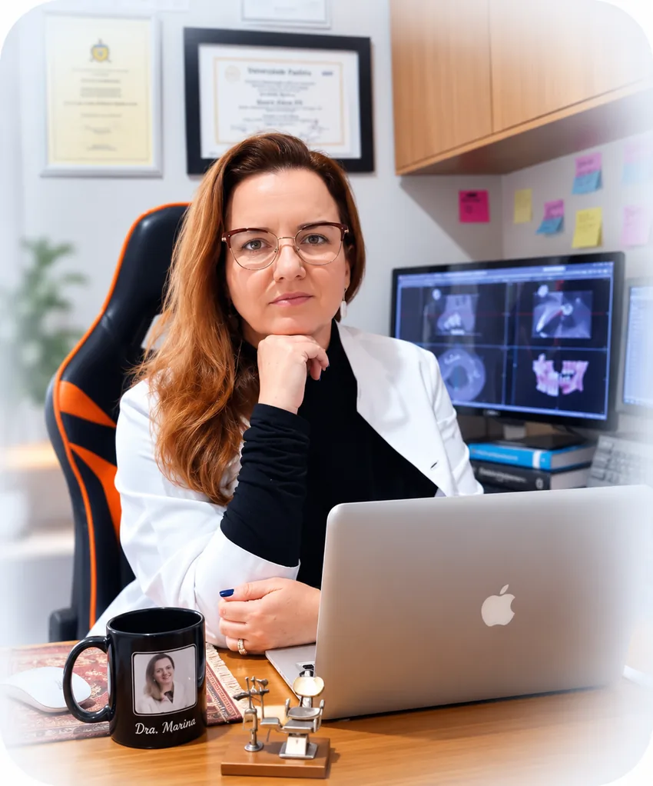

Tomografia Cone Beam
Interpretação de tomografia computadorizada de feixe cônico para apoiar a avaliação e o planejamento clínico.
Saiba mais sobre os laudosInterpretação especializada de tomografia Cone Beam e imagens odontológicas para clínicas e cirurgiões-dentistas, com envio digital de exames.
Apoio especializado à interpretação de exames, com comunicação clara para a rotina clínica.
Interpretação de tomografia computadorizada de feixe cônico para apoiar a avaliação e o planejamento clínico.
Saiba mais sobre os laudosAnálise de imagens odontológicas e elaboração de laudos radiológicos conforme a modalidade e a solicitação clínica.
Consultar modalidadesAtendimento digital para clínicas que precisam encaminhar exames e conhecer as condições de prestação de serviços.
Solicitar propostaA clínica cadastra os dados necessários e envia os arquivos pelo portal.
A radiologista realiza a interpretação das imagens conforme a solicitação recebida.
Acompanhe a solicitação e consulte o resultado pela plataforma.
Radiologista odontológica responsável pela interpretação de imagens e elaboração dos laudos MALIBUB. Registro profissional: CRO-SP 113752.
Os laudos complementam a avaliação clínica e não substituem a decisão do cirurgião-dentista responsável pelo atendimento.
Conheça a MALIBUB no Instagram
A MALIBUB trabalha com interpretação de tomografia Cone Beam e imagens odontológicas. Confirme as modalidades disponíveis com o atendimento comercial.
Sim, o envio dos exames é digital, com atendimento a clínicas de diferentes regiões do Brasil conforme as condições de prestação do serviço.
Entre em contato pelo WhatsApp comercial (47) 99179-2081 para conhecer modalidades, disponibilidade e condições.
As solicitações são cadastradas no portal MALIBUB.
Fale diretamente com a MALIBUB e conheça as condições de atendimento.